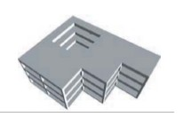

Other horizontal irregularity [IRHO]
A horizontal irregularity, not defined as any of the other Horizontal Irregularity definitions in this table, that is likely to adversely affect the earthquake performance of the building.
Examples of such horizontal irregularities include discontinuous diaphragms, and vertical lateral load-resisting elements non-parallel to the major orthogonal axes of the lateral load-resisting system. Cantilevers supporting lateral load-resisting elements like infill walls that are likely to resist seismic forces that overhang the structure below are examples of out-of-plane offsets.

Discontinuous diaphragm (cutout) (FEMA 454)

Non-parallel lateral load-resisting system (FEMA 454)